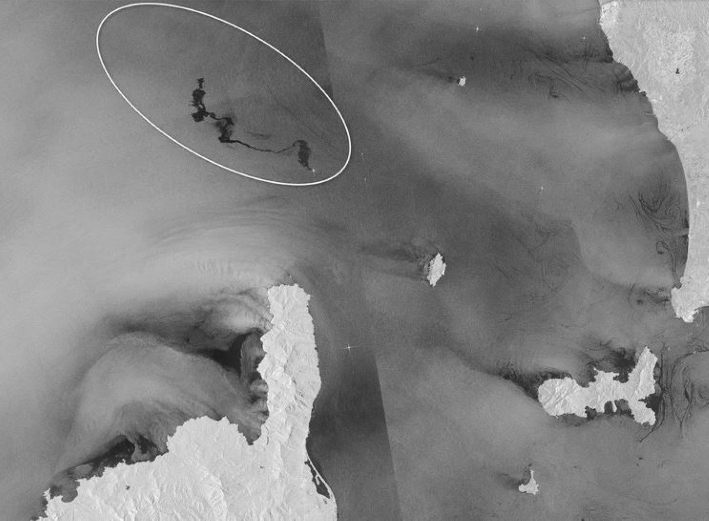

Los sensores activos emiten su propia energía (por ejemplo, luz o microondas) hacia la superficie terrestre y miden la energía que regresa tras interactuar con los objetos.
Características principales:
- Emisión propia de energía: No dependen de fuentes externas como el Sol.
- Capacidad para operar en cualquier condición: Funcionan de día o de noche y a través de nubes, lluvia o niebla (especialmente los que usan microondas, como el radar).
- Usos comunes: Medir altitudes, estudiar superficies rugosas, monitorear la humedad del suelo, analizar glaciares y bosques, y realizar estudios topográficos.
Plataformas de instalación:
- Satélites: Ejemplo: Sentinel-1 (SAR), ICESat (LIDAR).
- Aviones: LIDAR montado en aeronaves para estudios topográficos locales o regionales.
- Drones/UAVs: Sensores LIDAR o pequeños radares para mapeos de alta precisión.
- Estaciones terrestres: Sensores radar o LIDAR en plataformas fijas para monitorear áreas específicas.

Detección de vertidos de petróleo mediante imágenes RADAR